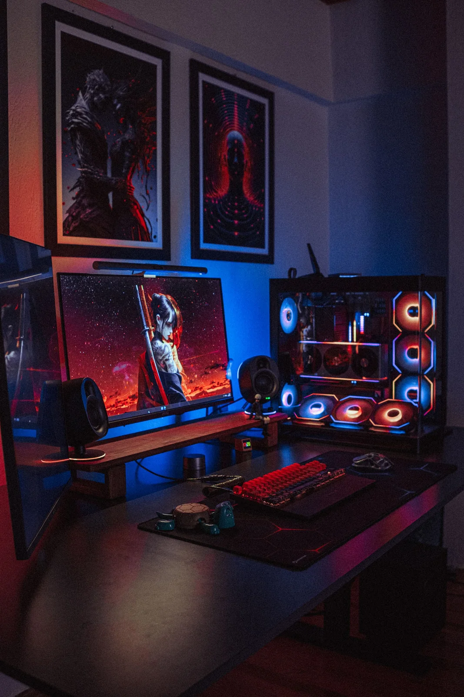

Una selección por variedad, no por precio de tienda
Elegimos juegos que permiten probar el núcleo jugable sin comprar el paquete inicial. Fortnite mezcla construcción, acción y modos creados por la comunidad; Warframe tiene combate cooperativo y progresión extensa; Genshin Impact ofrece exploración y una historia episódica con un sistema de personajes. Rocket League centra la propuesta en partidas rápidas de fútbol con coches. Cada uno usa actualizaciones y monetización de forma diferente, así que no comparten el mismo coste a largo plazo.
Battle royale y partidas competitivas
Apex Legends y Fortnite funcionan bien con amistades que ya conocen el género, aunque el ritmo, la cámara y los objetivos cambian. Valorant propone enfrentamientos tácticos por rondas y exige coordinación en PC. Los objetos de pago son principalmente cosméticos en algunos de estos títulos, pero las temporadas y pases merecen una lectura cuidadosa. Revisa la edad recomendada, comunicación de voz y controles parentales antes de empezar.

Cooperación y progresión
Warframe es la opción para quien disfruta optimizar equipo y dominar misiones cooperativas; su enorme cantidad de sistemas exige paciencia al principio. Destiny 2 tiene contenido gratuito y expansiones de pago, por lo que no todo el catálogo está incluido sin coste. Genshin Impact facilita explorar a solas y en grupo limitado, pero sus invocaciones usan moneda virtual. Revisa el gasto opcional y establece límites personales o familiares.
Cuatro comprobaciones antes de descargar
Comprueba el tamaño de descarga y espacio libre; la política de compras y reembolsos; si necesitas suscripción para jugar online en consola; y qué datos personales o de voz compartes. Consulta también si el progreso se sincroniza entre plataformas. “Gratuito” suele describir el acceso inicial, no todas las funciones ni todos los cosméticos. Una decisión informada evita sorpresas y discusiones al completar el perfil de pago.
Cómo elegir uno para tu grupo
Para sesiones rápidas, prueba Rocket League. Si la escuadra quiere competir, elegid un juego con comunicación y reglas que disfrute todo el mundo. Para progresar durante semanas, Warframe ofrece sistemas profundos. Acordad límites de compra antes de jugar y no compartáis la contraseña de una cuenta. Si alguien del grupo tiene una plataforma distinta, confirma el juego cruzado en las notas oficiales.
Mira más allá de la descarga inicial
Antes de instalar, confirma tamaño de actualización, espacio requerido y si el juego se mantiene con temporadas. Un free-to-play puede incluir pase de batalla, lotería de personajes, paquetes de expansión o suscripción propia. Revisa cómo se obtiene la moneda y si la interfaz permite compras rápidas. Para menores, configura PIN de compra y límites de gasto en la cuenta de la consola, no solo dentro del juego.
Juego cruzado y progreso compartido
Conecta con amistades solo después de confirmar que las plataformas pueden compartir partidas y si hay restricciones para grupos. El cross-play puede permitir jugar juntos sin que las compras cosméticas o los avances se muevan de una consola a otra. Vincular una cuenta por primera vez suele ser importante; utiliza el sitio oficial del editor y evita páginas que pidan contraseña. Lee también cómo borrar o desvincular el perfil si cambias de plataforma.
Cómo probar un juego sin compromiso
Dedica una sesión inicial a aprender el bucle principal y detenerte antes de comprar una mejora. Pregúntate si te gusta jugar incluso sin recompensas diarias o pase de temporada. Desactiva notificaciones promocionales si el juego te hace volver por obligación. Una experiencia gratuita es valiosa si la disfrutas; si la progresión se siente como una tarea, puedes dejarla sin haber gastado dinero. La selección se centra en estilos, no en duración de retención.
Compras dentro del juego y decisiones informadas
Las compras opcionales pueden ir desde un aspecto visual hasta un pase que acelera progresión. Antes de gastar, comprueba qué ofrece el paquete, si puede obtenerse jugando y cuándo termina. La moneda virtual dificulta comparar precios porque se vende en cantidades cerradas; convierte el saldo a moneda real y revisa el coste final. Evita compartir un método de pago sin límites con menores y utiliza la confirmación de compra del sistema. No todo jugador debe optimizar cada desbloqueo: puedes disfrutar el núcleo gratuito y no comprar nada. La calidad de un juego no se mide por cuánto tiempo consigue retenerte ni por cuánto contenido has pagado.
En resumen
Empieza con un juego cuyo bucle principal te atraiga y define de antemano si aceptarás compras opcionales. La tienda oficial y los ajustes parentales ofrecen la información más fiable sobre los costes y límites actuales.
Preguntas frecuentes
¿“Free-to-play” quiere decir que todo es gratis?
No. El acceso inicial es gratuito, pero pueden existir expansiones, moneda virtual, pases o cosméticos de pago.
¿Cuál es el mejor gratis para jugar con amigos?
Rocket League es fácil de probar; la mejor opción depende de la plataforma y del género preferido.
¿Necesito suscripción para jugar online?
Las reglas varían por plataforma y juego. Comprueba la ficha y la política actual de la consola.
¿El progreso pasa entre plataformas?
Solo cuando el juego admite progresión cruzada y las cuentas están enlazadas correctamente.
Fuentes y lecturas
Consulta la fuente original cuando exista y su fecha; los anuncios, el catálogo y las guías de terceros pueden cambiar.